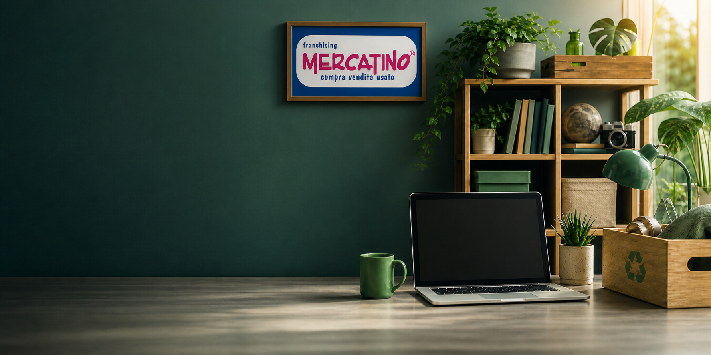

Economia circolare
Pannello impatto riuso demo v0.1

Seconda vita agli oggetti
Quanto valore ambientale genera un mercatino dell'usato?
Seleziona area e negozio per presentare una stima demo di oggetti venduti, energia risparmiata e CO2 evitata grazie al riuso.
Filtri
Seleziona mercatino
Categorie
Energia risparmiata per tipologia
Ogni valore del grafico e espresso in kWh risparmiati stimati.
Provincia
Confronto mercatini selezionati
Confronto dei mercatini della provincia selezionata per kWh risparmiati stimati.
Scheda negozio
Mercatino
- Citta
- -
- Indirizzo
- -
- Tipologia
- -
- Superficie
- -
AI demo
Stima narrativa di impatto
Seleziona un mercatino per generare una lettura sintetica del risparmio ambientale stimato.